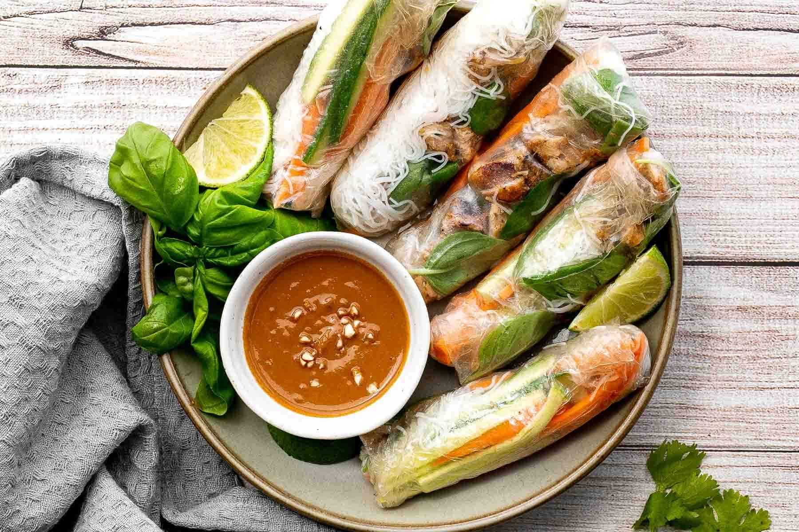

Summer Rolls

Description
Fresh summer rolls are light, healthy Vietnamese appetizers made with rice paper wrappers filled with a mix of fresh vegetables, herbs, rice noodles, and shrimp or tofu.
They are served with a flavorful peanut dipping sauce, offering a refreshing balance of textures and flavors.
Ingredients:
- Rice paper wrappers
- 200g cooked shrimp or tofu (sliced)
- 1 carrot (julienned)
- 1 cucumber (julienned)
- 1 bell pepper (sliced thin)
- Fresh herbs (mint, cilantro, or basil)
- Rice noodles or vermicelli (cooked)
- Lettuce leaves
Peanut Dipping Sauce:
- 3 tbsp peanut butter
- 2 tbsp soy sauce
- 1 tbsp hoisin sauce
- 1 tsp lime juice
- 1-2 tbsp water (to thin)
Steps:
- Prep the veggies: Slice carrot, cucumber, and bell pepper into thin strips. Cook shrimp or tofu and set aside.
- Cook the noodles: Boil rice noodles or vermicelli according to package instructions, then rinse with cold water and drain.
- Assemble: Soak a rice paper wrapper in warm water for about 10 seconds until soft. Lay it flat on a damp surface.
- Fill: Place a bit of each veggie, noodles, shrimp or tofu, and fresh herbs in the center. Add a lettuce leaf for extra crunch.
- Roll: Fold the sides over the filling, then roll tightly from one end like a burrito.
- Dipping Sauce: Mix the peanut butter, soy sauce, hoisin sauce, lime juice, and water until smooth.
- Serve: Dip the summer rolls in the peanut sauce and enjoy!